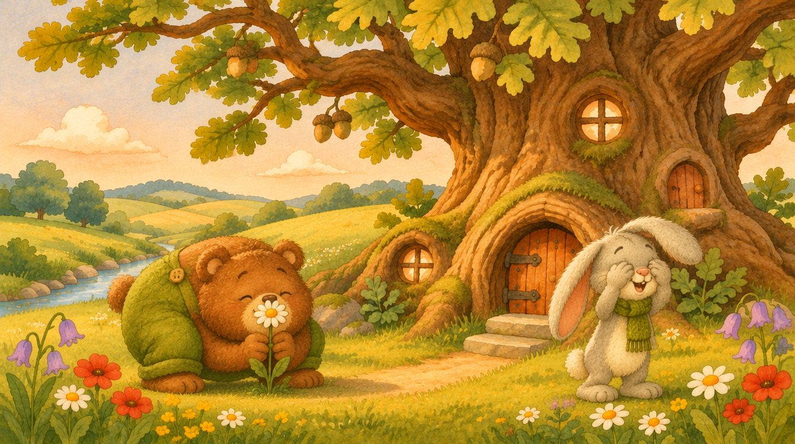

Sin miedo ni tensión
Incluso la noche en Doupátkov es azul y amable. Sin villanos ni sustos antes de dormir.

Serie animada para preescolares
Historias tranquilas de una pequeña aldea dentro de un viejo roble. Sin sustos ni prisas: solo pequeñas preocupaciones infantiles, amigos cariñosos y siempre un final feliz.
Sobre la serie
Dentro de un viejo roble hueco se esconde Doupátkov, una aldea acogedora. Allí vive Ouško, un conejito curioso, con sus amigos. Cada episodio presenta una situación sencilla que los niños pequeños conocen bien: el miedo a la oscuridad, compartir los juguetes, un nuevo amigo o una tormenta al otro lado de la ventana.
La serie es pausada y suave, al estilo de los clásicos dibujos checos para antes de dormir. Nadie anuncia la moraleja en voz alta: los niños la descubren solos, junto a Ouško.
Incluso la noche en Doupátkov es azul y amable. Sin villanos ni sustos antes de dormir.
Compartir, los celos, pedir perdón, lavarse los dientes. Temas que los niños viven cada día.
Cada episodio termina con una canción del grillo Notička y la sensación de que todo vuelve a estar bien.
Personajes
Solo unos pocos amigos, para que hasta los más pequeños los recuerden fácilmente.

conejito curioso · protagonista
Mira el mundo con asombro y quiere probarlo todo. A veces se equivoca, pero siempre aprende algo.

sabia abuela erizo
Teje en su mecedora, prepara té de hierbas y sabe qué hacer cuando algo sale mal. Con su farolillo, nada la asusta.

osito torpe pero bondadoso
Un forzudo de gran corazón. Le encanta comer, le encanta dormir y, cuando juega al escondite, se esconde detrás de una flor.

pequeño grillo músico
Un alegre bromista que lo resuelve todo con una canción. Su violín suena al final de cada episodio.

zorrita un poco traviesa
No se le escapa nada. Llegó a Doupátkov como nueva amiga y enseña a los demás lo que es justo.
El mundo
Redondo, suave y cálido. Ocre, verde musgo y terracota, como si todo el bosque estuviera tejido con lana.



Episodio 1 · 10 minutos
Ouško juega con Brumla en el prado hasta que oscurece. En casa se le apaga la vela y en la pared aparece una sombra enorme con orejas largas. Babča Ježka toma su farolillo y va con él a echar un vistazo a la oscuridad. Y resulta que todo tiene una explicación amable.
«La oscuridad es solo el momento en que el bosque duerme».Babča Ježka
Episodios
Elige un tema que tu peque esté viviendo ahora o busca un episodio por su título.
No hemos encontrado ese episodio. Prueba con otra palabra. 🦔
Para familias
Cada episodio tiene el mismo ritmo tranquilo. Los niños saben lo que viene, y eso les da seguridad.
30 s
Quién, dónde y de qué se trata hoy.
6–7 min
Un problema sencillo que el personaje resuelve a su manera.
1–2 min
Una enseñanza suave, nunca en voz alta ni con el dedo levantado.
30 s
Notička toca y todos se despiden.